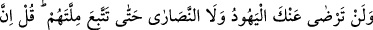
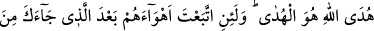
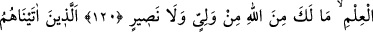
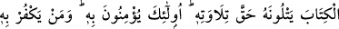
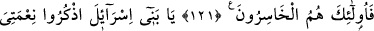
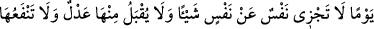
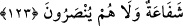

DOĞRU YOL
ANCAK ALLAH’IN YOLUDUR
120. Dinlerine uymadıkça yahûdîler de hıristiyanlar da asla senden râzı
olmayacaklardır. De ki: Doğru yol, ancak Allah’ın yoludur. Sana gelen ilimden
sonra onların arzularına uyacak olursan, andolsun ki, Allah’dan sana ne bir dost ne
de bir yardımcı vardır.
121. Kendilerine kitap verdiğimiz kimseler(den bâzısı) onu, hakkını gözeterek
okurlar. Çünkü onlar, ona îmân ederler. Onu inkâr edenlere gelince, işte gerçekten
zarara uğrayanlar onlardır.
122. Ey İsrâîloğulları! Size verdiğim nimetimi ve sizi (bir zamanlar) cümle âleme
üstün kılmış olduğumu hatırlayın.
123. Ve bir günden sakının ki, o günde hiç kimse başkası nâmına bir şey
ödeyemez, kimseden fidye kabûl edilmez, hiç kimseye şefâat fayda vermez. Onlar
hiçbir yardım da görmezler.
Allah, bu âyette Rasûlullah’dan, ehl–i kitab’ın râzı olmasını imkânsız ve çıkışı
olmayan bir husûsa –ki o da Rasûlullah’ın onların dînini benimsemesine– bağlamakla,
Hz. Peygamber’den onları islâmlaştırmadaki aşırı isteğinden ümidini kesmesini
istemektedir. Ondan râzı olmadıkları halde, onun dînine nasıl tâbi olabilirler. Yâni
yahûdîler, sen yahûdîleşmedikçe ve onların kıblesine –batıya– yönelip namaz
kılmadıkça; hıristiyanlar da sen hıristiyanlaşmadıkça ve onların kıblesine –doğuya–
yönelip namaz kılmadıkça asla hoşnud olmazlar. Bu onların: “Bizim dînimize
girmedikçe senden râzı olmayız.” sözlerinin bir hikâyesidir. Onlar bu sözleriyle, gûyâ
kendi dinlerinin, kesinlikle hidâyet yolu olduğunu; diğerlerinin olmadığını iddiâ